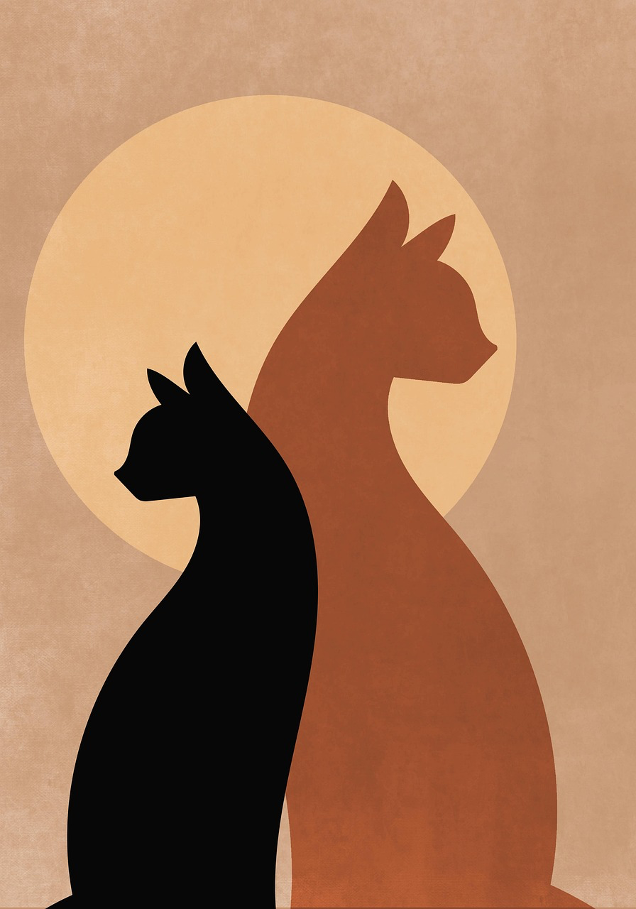
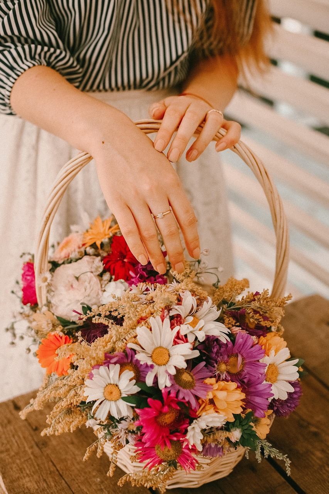
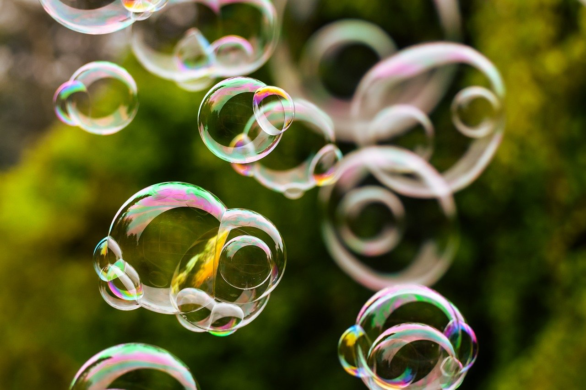
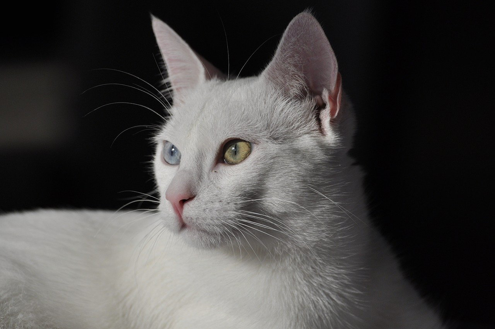
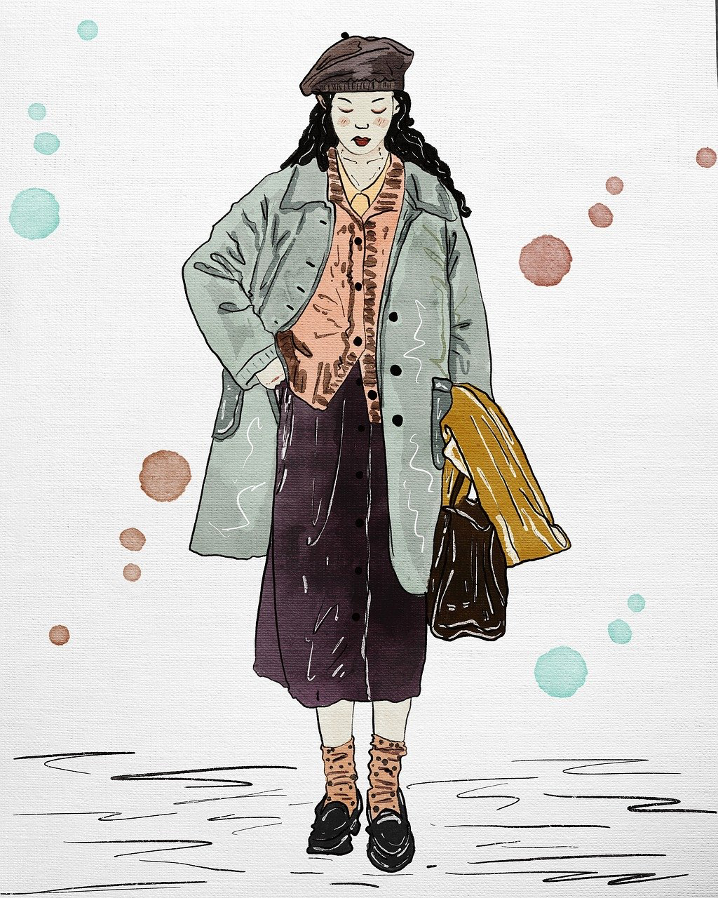

Bild 1 – Tiere im Wald

Bild 2 – Blumenstrauß mit bunten Farben
Bild 3 – Der Eibsee bei Garmisch
Bild 4 – Porträt einer Frau
Bild 5 – Porträt eines Mannes

Bild 6 – Schweben der Seifenblasen
Bild 7 – Abstrakter Hintergrund

Bild 8 – Weiße Katze mit blauen Augen

Bild 9 – Frau mit rotem Mantel